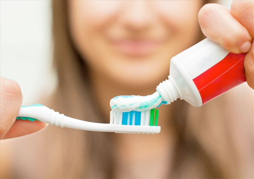

Los ácidos y las bases son dos grupos de sustancias químicas que están presentes en muchos productos de uso cotidiano. Por ejemplo, las naranjas, los tomates y el vinagre contienen ácidos, mientras que algunos de los ingredientes de los jabones y la crema dental son bases.
-
01
Las teorías ácido-base
Open or CloseLa crema dental para la limpieza de los dientes tiene componentes de carácter básico que ayudan a neutralizar los ácidos que dejan los residuos de los alimentos.
Un ácido es una sustancia química que al disolverse en el agua genera iones hidrógeno H+. Se caracterizan, entre otras cosas, por tener un sabor agrio, ser corrosivos al entrar en contacto con la piel, ser punzantes al tacto y por perder sus propiedades al reaccionar con las bases.
Una base es un compuesto químico que libera iones hidroxilo (OH-) en una disolución acuosa. Las bases tienen un sabor amargo; son corrosivas en contacto con la piel; son jabonosas al tacto y pierden sus propiedades al reaccionar con los ácidos.
Recuerda
¡Atención!
Las sustancias corrosivas producen fuertes irritaciones e incluso quemaduras graves cuando entran en contacto con la piel.
Las propiedades de los ácidos y las bases PROPIEDAD ÁCIDOS BASES Sabor Agrio Amargo Tacto Punzante Jabonoso Conducción de la corriente eléctrica Sí, disueltos en agua Sí, disueltas en agua Acción sobre la piel Son corrosivas Son corrosivas Acción sobre los colorantes vegetales Los hacen cambiar de color Los hacen cambiar de color Acción sobre algunos metales Los corroen Los corroen Acción sobre otros ácidos/bases Pierden sus propiedades Pierden sus propiedades Acción sobre otras sustancias Las disuelven En algunos casos hacen precipitar compuestos insolubles Profundiza
01.1La teoría de Arrhenius
El primero en proponer una teoría sobre los ácidos y las bases fue el químico sueco Svante Arrhenius. Él planteó que un ácido era una sustancia que libera iones hidrógeno H+ en disolución acuosa. En cambio, una base es un compuesto que libera iones hidroxilo OH- en disolución acuosa.
Ácido de Arrhenius
Base de Arrhenius
01.2La teoría de Brönsted-Lowry
En la década de 1920 surge una teoría que plantea definiciones más generales sobre los ácidos y las bases. Dicha teoría, fue planteada por el químico danés J. N. Brönsted y el químico inglés Thomas Lowry, la cual determina que un ácido es una sustancia que dona o cede protones (iones hidrógeno H+), y una base es el compuesto capaz de recibir o aceptar dichos protones.
Según esta teoría, todos los ácidos poseen una base conjugada (cuando ceden protones) y todas las bases poseen un ácido conjugado (cuando aceptan protones). Por esto, en la reacción entre el ácido nitroso (HNO2) y el agua (H2O), el ácido pierde un protón y se genera la base conjugada. El agua, que se comporta como base, acepta el protón y se produce el ácido conjugado.
Y, en la reacción entre el amoniaco (NH3) y el ácido fluorhídrico (HF), el amoniaco acepta el protón que pierde el ácido fluorhídrico y se producen los respectivos ácido y base conjugados
El ion H+ y el ion H3O+
En las disoluciones acuosas, cuando se disocia un ácido, se produce el ion H+ (protón). Este ion interactúa con los pares electrónicos libres sobre el oxígeno de las moléculas de agua, y forma iones hidronio (H3O+). En algunas ecuaciones químicas se utiliza los símbolos H+ o H3O+, expresiones que representan lo mismo.
01.3La teoría de Lewis
Esta teoría, formulada por Gilbert Lewis, plantea la aceptación o donación de un par de electrones durante una reacción química. De acuerdo con Lewis, un ácido es una sustancia capaz de recibir un par de electrones para formar un enlace covalente y una base es un compuesto capaz de donar un par de electrones para formar un enlace covalente.
El amoniaco (NH3) es una base de Lewis, en donde el nitrógeno (N) tiene un par de electrones libres con los cuales puede formar un enlace covalente con el protón (H+) proveniente del agua.
01.4Consolidación
Actividades para consolidar lo que has aprendido en esta sección.
-
02
La autoionización del agua
Open or CloseSe entiende por autoionización del agua la reacción química en la que una molécula de agua actúa como ácido para transferir un protón a otra molécula de agua que funciona como base. Esta transferencia da lugar a la formación de un ion hidronio (H3O+) y un ion hidroxilo (OH-). Dicha reacción se expresa así:
En el proceso de autoionización del agua son pocas las moléculas que se ionizan, por ello se considera al agua una sustancia mala conductora de la electricidad.
Recuerda
Un ion es un átomo o grupo de átomos con carga eléctrica positiva (catión) o negativa (anión).
La disociación iónica es el proceso por el cual una sustancia disuelta en agua se separa en los iones que la forman.
Por ejemplo:
NaOH ? Na+ + OH-
Profundiza
02.1La constante de disociación del agua
La constante de disociación del agua, también conocida como constante del producto iónico del agua, es una relación matemática que expresa el producto iónico del agua, que resulta de multiplicar la concentración de iones hidronio [H3O+] por la concentración de iones hidroxilo [OH-] a una temperatura de 25 °C. Esta constante es específica para la autoionización del agua, se representa como Kw y se expresa de la siguiente manera:
Kw = [H3O+] [OH-] = 1,0 × 10 -14
02.2La acidez de las disoluciones
Cuando un ácido se disuelve en agua, se disocia formando iones hidronio (H3O+) en un número mucho mayor al de los iones hidroxilo (OH-) aportados por las pocas moléculas de agua ionizadas.
Cuando una base se disuelve en agua, se disocia formando iones hidroxilo (OH-) en un número mucho mayor al de los iones (H3O+) aportados por las pocas moléculas de agua ionizadas.
El efecto de los hidronio y los hidroxilo
Cuando se disuelve un ácido o una base en agua, la concentración de iones hidronio (H3O+) o iones hidroxilo (OH-) provenientes de estas sustancias respectivamente, genera una perturbación en el equilibrio de autoionización del agua, por ello este se desplaza hacia la izquierda, por lo tanto la concentración de iones hidronio e hidroxilo provenientes de la autoionización del agua disminuye.
Disoluciones de acuerdo con la concentración de iones hidronio e hidroxilo DISOLUCIÓN CONCENTRACIONES DE IONES
HIDRONIO E HIDROXILONeutra [H3O+] = [OH-] Ácida [H3O+] > [OH-] Básica [H3O+] < [OH-] Se puede expresar la acidez o la basicidad de una sustancia siempre y cuando se conozca la concentración de uno de los iones.
Por ejemplo: una disolución a 25 ºC tiene una concentración de iones hidronio de 1,2 × 10 -4 M. ¿Qué tipo de disolución es?
- Escribimos la ecuación de la disociación del agua:
- Reemplazamos la concentración conocida de ion hidronio:
- Despejamos la variable desconocida que corresponde, en este caso, a la concentración de ion hidroxilo:
- Hallamos el valor de la concentración de ion hidroxilo:
La disolución es ácida porque la concentración de iones hidronio (H3O+) es mayor que la concentración de iones hidroxilo (OH-).
Concentración de iones en el agua
Como el agua es neutra, la concentración de iones hidronio [H3O+] es igual que la concentración de iones hidroxilo [OH-].
[H3O+] [OH-] = 1,0 × 10 -14
[x] [x] = 1,0 × 10 -14
[x]2 = 1,0 × 10 -14
[x] = 1,0 × 10 -7
[H3O+] = 1,0 × 10 -7 [OH-] = 1,0 × 10 -7
02.3Consolidación
Actividades para consolidar lo que has aprendido en esta sección.
-
03
El pH y el pOH
Open or ClosePara saber qué tan fuerte es una disolución de un ácido, hay que conocer la concentración de iones hidronio (H3O+) en la disolución. Lo mismo se aplica para las bases respecto a la concentración de iones hidroxilo (OH-).
Los valores de las concentraciones de estos iones generalmente son muy pequeños (del orden de 10-1 a 10-14), por lo que resulta incómodo hacer cálculos con estas cifras. Para facilitarlos, se definió el pH o potencial de hidrógeno.
El pH se relaciona con la concentración molar de iones hidronio (H3O+) presentes en una disolución acuosa ácida o básica y se define de la siguiente manera:
pH = -log [H3O+]
Donde [H3O+] es la concentración de iones H3O+ en moles por litro (mol/L).
De modo semejante, para las disoluciones básicas, el pOH se expresa como:
pOH = -log [OH-]
El pH y el pOH están relacionados por la fórmula:
pH + pOH = 14
Profundiza
03.1La escala de pH
La escala de pH es una recta numérica que va del 0 al 14 y sirve para expresar la acidez de una sustancia. La escala está dividida en 14 unidades. El pH de cualquier disolución acuosa ácida o básica estará siempre comprendido entre estos dos valores extremos y pueden ser decimales, por ejemplo el pH del limón oscila entre 2,2 y 2,4.
En la escala de pH: la acidez aumenta a medida que disminuye el pH (de 6 a 0) y la basicidad aumenta a medida que aumenta el pH (de 7 a 14).
03.2La determinación del pH
En el laboratorio, el pH se puede determinar utilizando el papel indicador de pH o un aparato llamado pH-metro (peachímetro).
El papel indicador de pH es una tira de papel impregnada con una disolución de uno o varios compuestos indicadores que cambian de color según la concentración de iones hidronio y por tanto del pH. El papel indicador presenta diferentes colores al ponerse en contacto con una disolución y cuando cubre toda la escala de pH. Sirve para conocer de forma rápida y aproximada la fuerza de una disolución ácida o básica.
Papel indicador de pH. Al poner en contacto un extremo de la tira con la disolución que se desea analizar, el papel adquiere un determinado color que se compara con el patrón en la escala.
El procedimiento es el siguiente: se coloca una gota de la disolución sobre un trocito de papel indicador de pH y se compara el color que presenta el papel con los colores de la escala de referencia, que tienen asignado un valor de pH.
El gráfico muestra el pH de distintas disoluciones de uso cotidiano y los colores que adquiere el papel indicador de pH con cada una de ellas.
El pH-metro es un aparato que sirve para realizar una medición más precisa que la obtenida con un papel indicador pH y permite leer directamente el pH en una pantalla. Para su funcionamiento correcto, es necesario calibrarlo con una sustancia de pH conocido, denominada disolución patrón.
En un pH-metro la muestra de la cual se quiere medir el pH está dentro del vaso de precipitados. El electrodo se introduce en el líquido y el valor de pH se lee en la pantalla.
03.3Los ácidos y las bases: fuertes y débiles
La fuerza de los ácidos y de las bases depende de su capacidad para disociarse en iones cuando se hallan disueltos en agua. No todos los ácidos y las bases tienen la misma capacidad de disociarse y liberar o aceptar iones hidronio. La fracción de las moléculas que se ionizan en un medio acuoso depende de la naturaleza de la sustancia.
03.3.1Los ácidos y las bases fuertes
Los ácidos y las bases fuertes se disocian completamente en iones en una disolución acuosa. Un ejemplo de ácido fuerte es el ácido clorhídrico (HCl) y una base fuerte es el hidróxido de potasio (KOH).


Esquema de la disociación de un ácido fuerte en agua (no se representan las moléculas de agua).
En la disociación de un ácido fuerte en agua, la concentración de iones (H3O+) es aportada en muy alta proporción por el ácido, mientras que en la disociación acuosa de una base fuerte, la concentración de (OH-) es aportada en muy alta proporción por la base. Este hecho permite calcular el pH de una manera sencilla teniendo en cuenta estas concentraciones.
Por ejemplo: ¿Cuál es el pH de una disolución 0,03 M de HCl?
- Planteamos la ecuación de la disociación de la sustancia:
- El enunciado nos indica que la disolución es 0,03 M de HCl. El HCl es un ácido fuerte, por lo tanto se disocia completamente. En la disolución acuosa habrá una concentración 0,03 M de iones (H3O+) y 0,03 M de iones Cl-.
- Escribimos la expresión para calcular el pH:
pH = -log [H3O+] - Reemplazamos el valor de la concentración de iones
H3O+:
pH = -log [0,03] - Hallamos el valor del pH:
pH = 1,52
Determinación de concentraciones de iones H3O+ a partir del pH
Cuando se necesite determinar la concentración de iones H3O+, teniendo en cuenta el pH, se debe utilizar la siguiente ecuación:
[H3O+] = 10-pH
Por ejemplo: ¿Cuál es la concentración de H3O+ de una disolución cuyo pH es 9,6?
[H3O+] = 10-9,6
[H3O+] = 2,5 × 10-10
03.3.2Los ácidos y las bases débiles
Los ácidos y las bases se disocian parcialmente en una disolución acuosa. Un ejemplo de ácido débil es el ácido fluorhídrico (HF) y uno de base débil es el amoniaco (NH3).
En la disociación de ácidos y bases débiles se establece un equilibrio químico que denotamos por una doble flecha. En estos casos, la sustancia no se disocia completamente. Así, en una disolución acuosa de ácido fluorhídrico habrá iones fluoruro (F-), iones hidronio (H3O+) y moléculas de HF. En el caso de la disolución de amoniaco coexistirán iones amonio (NH4+), iones hidroxilo (OH-) y moléculas de amoniaco (NH3).

Esquema de la disociación de un ácido débil en agua (no se representan las moléculas de agua).
Profundiza
Practica
03.4Las disoluciones buffer
Una disolución buffer, también conocido como tampón químico o disolución reguladora, es una mezcla que contiene concentraciones de un par conjugado ácido-base. Su principal propiedad consiste en que permite mantener el pH dentro de límites reducidos cuando se añaden cantidades pequeñas de ácido o de base. Estas disoluciones tienen gran importancia en procesos químicos, industriales, biológicos, fisiológicos, entre otros.
Existen dos tipos de disoluciones buffer:
- Ácido débil y la sal de su base conjugada, por ejemplo ácido acético y acetato de sodio
- Base débil y la sal de su ácido conjugado, por ejemplo amoniaco y cloruro de amonio
El rango de pH normal en la sangre humana va de 7,35 a 7,45. Un aumento de pH que supere a 7,8 o una disminución de pH hasta 6,8 produce la muerte. En la sangre el principal mecanismo amortiguador es el sistema ácido carbónico-bicarbonato.
03.5Consolidación
Actividades para consolidar lo que has aprendido en esta sección.
-
04
Los indicadores ácido-base
Open or ClosePara averiguar con rapidez si una disolución es ácida o básica se utilizan los indicadores. Estas sustancias tienen la propiedad de cambiar de color cuando la acidez o basicidad de una disolución sobrepasa un determinado valor. Basta con añadir dos o tres gotas de indicador a la disolución y observar qué color adquiere el líquido.
La variación del color que presenta un indicador se denomina viraje. Los indicadores no viran a un pH determinado, por ello se manejan intervalos de viraje, los cuales son específicos para cada indicador, por ejemplo el naranja de metilo vira en medio ácido a un intervalo de pH de 3,1 a 4,4.
Hay muchos indicadores ácido-base; dos de los más usados en el laboratorio de química son la fenolftaleína y el tornasol.
Algunos indicadores más comunes INDICADOR INTERVALOS DE VIRAJE DE pH CAMBIO DE COLOR Rojo de metilo 4,2 a 6,3 De rojo a amarillo Fenolftaleína 8,3 a 10 De incoloro a rosado Naranja de metilo 3,1 a 4,4 De naranja a amarillo Azul de bromotimol 6,0 a 7,6 De amarillo a azul Los indicadores permiten reconocer la presencia de un ácido o de una base en disolución pero no dan una idea de su fuerza.
El viraje de los indicadores
En algunas ocasiones se dice que los indicadores presentan una coloración en medio ácido y otra en medio básico, pero no se puede generalizar, pues hay algunos indicadores que tienen viraje solo en pH ácido o en pH básico. Por ejemplo el intervalo de viraje del rojo de metilo es de 1,2 a 2,8, es decir a un pH inferior a 1,2 su coloración es rojo, en el intervalo 1,2 a 2,8 cambia poco a poco de color hasta amarillo, por encima de pH 2,8 la disolución es completamente amarilla.
Profundiza
04.1Consolidación
Actividades para consolidar lo que has aprendido en esta sección.
-
05
Las reacciones de los ácidos y las bases
Open or Close05.1La reacción de una base con una sal de amonio
05.2La reacción de un ácido con un metal
Los metales, como el zinc o el hierro, se oxidan, mientras que el hidrógeno del ácido se reduce y se desprende como gas.

Cuando el ácido sulfúrico reacciona con zinc se obtiene sulfato de zinc e hidrógeno. Se trata de una reacción redox en la que el zinc se oxida y el hidrógeno del ácido se reduce.
Recuerda
En una reacción redox, un elemento se oxida (cede electrones), mientras que otro se reduce (acepta electrones). El cambio en el estado de oxidación indica el número de electrones intercambiado.
05.3La reacción de un ácido con un carbonato
El carbonato de calcio (componente principal del mármol) es atacado por los ácidos y produce efervescencia debido al desprendimiento de dióxido de carbono gaseoso.
El ácido sulfúrico reacciona con el carbonato de calcio y se producen sulfato de calcio, agua y dióxido de carbono; este último se desprende como gas, por ello se observa una efervescencia.
El ácido sulfúrico es uno de los componentes de la lluvia ácida, por lo que esta reacción afecta severamente al mármol de los edificios y monumentos.
05.4La neutralización
La neutralización es la reacción entre un ácido y una base para dar una sal y agua como productos.
Una sal es un compuesto cristalino formado por el ion positivo de la base y el ion negativo del ácido. Si todos los hidrógenos del ácido son sustituidos por el metal de la base, la sal resultante será neutra; en caso contrario, se obtendrá una sal ácida.
La neutralización del ácido clorhídrico con hidróxido de sodio produce cloruro de sodio y agua.
Profundiza
05.5La valoración ácido-base
La valoración ácido-base permite determinar la concentración desconocida de una disolución ácida o básica. El procedimiento consiste en adicionar de manera controlada volúmenes de una sustancia de concentración conocida que puede ser una base o un ácido. En el proceso de la valoración se produce una reacción de neutralización, que se sigue por el cambio de color del indicador utilizado.
El punto en el cual han reaccionado cantidades equivalentes de ácido y de la base es denominado punto de equivalencia o punto de neutralización.
A nivel experimental se puede establecer el punto final y de equivalencia mediante el uso de indicadores o de pH-metro.
Para realizar una valoración ácido-base se necesitan los siguientes instrumentos: bureta y matraz Erlenmeyer.
Recuerda
En la bureta se adiciona la disolución de concentración conocida y en el matraz Erlenmeyer se debe encontrar la disolución con concentración desconocida, a la cual se le adiciona el indicador ácido-base.
Profundiza
05.5.1La concentración de la disolución valorada
Si se conocen los volúmenes involucrados en la valoración ácido-base y la concentración de la disolución valorante, se puede calcular la concentración de la disolución de concentración desconocida o valorada. Para hallar la concentración desconocida se utiliza la siguiente ecuación de valoración:
VB × NB = VA × NA
Donde:
VB = volumen de la base
NB = Normalidad de la base
VA = volumen del ácido
NA = Normalidad del ácido
Conversión de molaridad a normalidad
La ecuación VB × NB = VA × NA solo funciona trabajando la concentración en normalidad (N). Sin embargo en la actualidad se utiliza más la concentración en molaridad (M). Una forma rápida de realizar conversiones de molaridad a normalidad es multiplicando la concentración molar por el número de iones (H+) o hidroxilos (OH-) que presenta la sustancia. Por ejemplo la concentración en normalidad de una disolución de H2SO4 0,05 M es 0,1 N.
Recuerda
La normalidad (N) es una forma de expresar la concentración de las disoluciones. Se define como el número de equivalentes de soluto disueltos en 1 L de disolución, y su unidad es equivalentes/L.
Por ejemplo: en una valoración de 25 ml de HCl se utilizaron 55 ml de NaOH 0,22 N para alcanzar la neutralización ¿Cuál es la concentración (N) del HCl?
- Escribimos la ecuación de valoración:
- Identificamos la información que suministra el enunciado:
VB = 55 ml
NB = 0,22 N
VA = 25 ml
NA = ? N - Reemplazamos en la fórmula la información conocida:
- Despejamos la incógnita:
- Hallamos el valor de la incógnita:
La concentración del HCl es 0,48 N.
05.6Las curvas de valoración
05.6.1La curva de valoración ácido fuerte-base fuerte
Cuando se realiza una valoración de una disolución de un ácido fuerte (HCl) con una disolución de base fuerte (NaOH), la típica curva de valoración es como la que se representa en el siguiente gráfico:
Curva de valoración de una disolución de HCl con una disolución de NaOH. En el eje horizontal se representa el volumen adicionado de disolución de NaOH y en el eje vertical la variación del pH.
La curva de valoración de ácido fuerte con base fuerte se inicia con un pH ácido. A medida que se le añade NaOH al HCl el pH varía lentamente, por disminución de la concentración del ácido. El punto de equivalencia se alcanza en pH = 7; en ese punto han reaccionado igual cantidad de moles de H3O+ y OH- y ha sucedido una neutralización. Si se sigue adicionando NaOH habrá exceso de esa sustancia y por lo tanto la disolución será básica.
El indicador más adecuado para utilizar en este tipo de valoración es el azul de bromotimol porque su viraje de color está muy cercano al punto de equivalencia pH = 7.
05.6.2La curva de valoración base fuerte-ácido fuerte
En el proceso de valoración de una base fuerte (NaOH) con ácido fuerte (HCl) se obtiene un gráfico como el siguiente:
Curva de valoración de una disolución NaOH con una disolución de HCl.
La curva de valoración de una base fuerte como el NaOH inicia con un pH básico. A medida que se le añade disolución de HCl va disminuyendo el pH, ya que parcialmente sucede una neutralización. El punto de equivalencia se presenta en pH = 7, donde la disolución se considera neutra, al producirse NaCl. Si se sigue adicionando HCl, la disolución se transforma en ácida porque hay exceso de iones H3O+ provenientes del ácido.
05.6.3La curva de valoración ácido débil-base fuerte
En la valoración de un ácido débil (ácido acético, HC2H3O2) con una base fuerte (NaOH) se obtiene una curva de valoración como la siguiente:
Curva de valoración de una disolución de HC2H3O2 con NaOH.
La curva de valoración del HC2H3O2 (ácido acético) inicia en un pH ácido mayor que 1, debido a que es un ácido débil. A medida que se añade NaOH aumenta el pH, el punto de equivalencia se alcanza en un pH > 7, por lo tanto la disolución será básica, debido a que el anión acetato (C2H3O2-) de la sal (NaC2H3O2) que se produce se comporta como una base débil. Al seguir añadiendo más NaOH, la disolución será más básica debido al exceso de iones OH-.
El indicador más adecuado para este tipo de valoración es la fenolftaleína, porque su viraje de color es a un pH > 7.
Valoración ácido débil-base fuerte y formación de buffer
En el trazo inicial de la curva de valoración de ácido acético con hidróxido de sodio, se evidencia que el cambio de pH con respecto a la adición de disolución valorante se mantiene dentro de un rango, esto se explica porque se forma un sistema de disolución buffer ácido acético-acetato, lo que genera que se mantenga dentro de límites reducidos el pH cuando se adiciona volúmenes de base fuerte.
05.7Consolidación
Actividades para consolidar lo que has aprendido en esta sección.
-
06
Los ácidos y las bases en la vida diaria
Open or CloseAlgunas disoluciones ácidas que se utilizan a diario son el vinagre (contiene ácido acético), el té (tiene ácido tánico), el limón (posee ácido cítrico) y la leche (contiene ácido láctico).
Ejemplos de productos que contienen ácidos: cítricos, vinagre y leche.
Algunas disoluciones básicas de uso cotidiano son los productos utilizados para limpiar cañerías (que llevan hidróxido de sodio), algunos artículos de limpieza (contienen amoniaco) o los antiácidos para aliviar la acidez de estómago (elaborados con hidróxido de magnesio).
Ejemplos de productos que contienen bases: jabones, productos de limpieza y antiácidos.
Profundiza
06.1Consolidación
Actividades para consolidar lo que has aprendido en esta sección.
-
07
La electroquímica
Open or Close07.1Los electrolitos
Un electrólito o electrolito es cualquier sustancia que libera iones cuando se halla en disolución acuosa. Las disoluciones que contienen electrolitos pueden conducir la electricidad.
Un no electrólito (como el azúcar) es una sustancia que no se ioniza cuando está disuelta en agua.
El azúcar se disuelve en agua pero las moléculas no se disocian en iones, por lo tanto no se comporta como un electrolito.
07.2Las reacciones óxido-reducción
En todo proceso electroquímico se producen reacciones de óxido-reducción o redox. Este tipo de reacción implica la transferencia de electrones entre unas sustancias que los pierden (se oxidan) y otras que los ganan (se reducen).
Por ejemplo:

Los números ubicados en la parte superior del símbolo de cada elemento son los estados de oxidación. Con relación a ellos podemos establecer lo siguiente:
- El zinc (Zn) cambia de estado de oxidación de 0 a +2, es decir que pierde electrones, por lo tanto se oxida y es agente reductor.
- La plata (Ag) cambia de estado de oxidación de +1 a 0, lo que indica que gana electrones, por lo tanto se reduce y es agente oxidante.
Recuerda
- El agente oxidante es el elemento o compuesto que gana electrones.
- El agente reductor es el elemento o compuesto que pierde electrones.
07.3Las celdas galvánicas
Las celdas galvánicas son unos dispositivos que se utilizan para obtener energía eléctrica a partir de reacciones óxido-reducción espontáneas.
Un ejemplo de celda galvánica es la celda de Daniell, la cual utiliza un ánodo de zinc (Zn) sumergido en una disolución de sulfato de zinc (ZnSO4) y un cátodo de cobre (Cu) sumergido en una disolución de sulfato de cobre II (CuSO4). Cada conjunto de disolución con su respectivo electrodo se conoce como una semicelda, en donde se produce una media reacción, ya sea de oxidación o de reducción.
Así, en la semicelda donde se encuentra el electrodo de Zn (ánodo) se produce la oxidación y en la semicelda con el electrodo de Cu (cátodo) se produce la reducción.
Las medias reacciones son:
Los electrones que pierde el electrodo de Zn viajan a través de un alambre conductor hasta el electrodo de Cu, donde sucede la reducción.
Un requisito para que la celda funcione es que las dos semiceldas estén conectadas por un puente salino, el cual contiene una disolución de un electrolito inerte (KCl), cuyos iones no reaccionan con los demás iones presentes en las disoluciones de las semiceldas. El propósito del puente salino es permitir la migración de iones, de tal manera que permanezcan eléctricamente neutras las disoluciones. A medida que se producen las semirreacciones de oxidación en el ánodo y de reducción en el cátodo, los iones del puente salino ingresan a las semiceldas para equilibrar las cargas.
La celda Daniell, fue creada en 1836 por el químico británico John Frederic Daniell.
Celdas galvánicas o voltaicas
Las celdas galvánicas o voltaicas se denominaron así en honor a los primeros científicos que desarrollaron este tipo de celdas, Luigi Galvani y Allesandro Volta.
07.4El potencial estándar de reducción
El potencial de una celda galvánica se obtiene por la diferencia entre los dos potenciales de los electrodos (ánodo y cátodo). Se ha convenido que el potencial de un electrodo determinado debe ser el asociado con la reacción de reducción en condiciones estándar:
Potencial estándar de reducción se representa como E°reducción; donde, el superíndice ° significa que se consideran condiciones estándar.
Recuerda
Las condiciones estándar son:
Concentraciones en disolución de reactantes y productos: 1 M
Temperatura: 25 °C
Presión (gases): 1 atm
Los valores de los potenciales estándar de reducción brindan información acerca de la facilidad de oxidación y reducción que tienen las especies químicas. De esta manera entre mayor sea el valor del potencial negativo de una especie, es fácilmente oxidable y buen agente reductor. Así mismo, entre mayor sea el valor positivo del potencial de reducción es buen agente oxidante y se reduce fácilmente. Por ejemplo el potencial de reducción del níquel (Ni2+(ac) + 2e- ? Ni(s)) es de -0,28 V y el del sodio (Na+(ac) + e- ? Na(s)) es - 2,71 V, lo que indica que el sodio se oxida más fácilmente en comparación al níquel.
La escala de potencial de reducción
La escala de potencial de reducción tiene como base la reducción del hidrógeno, los valores de potencial de reducción de especies que se encuentran por encima del hidrógeno (valores positivos) son buenos agentes oxidantes; de manera contraria, las especies que presentan valores que se encuentra por debajo (valores negativos) son buenos agentes reductores.
07.5La fuerza electromotriz de una celda
La fuerza electromotriz (fem) o potencial de celda es una medida de la fuerza que impulsa a los electrones a través del circuito. Para que se genere esta fuerza es necesario que haya una diferencia de potencial entre los electrodos. Para el caso de las celdas galvánicas, la diferencia de potencial permite que los electrones fluyan del ánodo (carga negativa) al cátodo (carga positiva) en un circuito. La fem de una celda se mide en voltios (V).
La fem de una celda depende del tipo de electrodos que se utilicen, las concentraciones de las disoluciones y la temperatura.
Para hallar la fem estándar de una celda galvánica se debe utilizar la siguiente ecuación:
E°celda = E°oxi + E°red
Donde:
E°celda = fem estándar de la celda
E°oxi = potencial de oxidación
E°red = potencial de reducción
Así, la fem estándar de la celda de Daniell es:
E°celda = 0,76 V + 0,34 V
E°celda = 1,10 V
Observa que el valor del potencial de oxidación es el inverso aditivo del valor de potencial de reducción. Revisa la tabla de Potenciales de reducción de algunas sustancias a 25°C.
Recuerda
El símbolo del potencial varía de acuerdo con las semirreaciones (oxidación-reducción) que ocurren en cada semicelda.
07.6Aplicaciones de la celdas galvánicas en la vida diaria
07.6.1La batería de plomo
07.6.2La pila seca
La pila seca es una celda que carece de fluido electrolítico, en cambio presenta una pasta húmeda que contiene cloruro de amonio (NH4Cl), cloruro de zinc (ZnCl2) y agua. El ánodo es una carcasa de zinc. El cátodo es una barra de carbono recubierta de dióxido de manganeso (MnO2). La pila seca se utiliza en juguetes, linternas, radios portátiles etc.
Las pilas secas tienen una vida útil limitada debido a que el ánodo de zinc se deteriora por tener contacto con NH4Cl que tiene carácter ácido.
07.6.3La pila alcalina
Al igual que en la pila seca, el ánodo es de zinc (polvo) que está en contacto con una disolución de hidróxido de potasio (KOH). El cátodo es de MnO2. La carcasa de la batería está fabricada en acero para evitar derrame del KOH.
Se llaman pilas alcalinas porque su fluido electrolítico es el KOH, que es una base o álcali.
Profundiza
07.7Consolidación
Actividades para consolidar lo que has aprendido en esta sección.
-
08
Competencias
Open or ClosePon a prueba tus capacidades y aplica lo aprendido con estos recursos.
-
Fin de unidad:
Open or Close
repaso